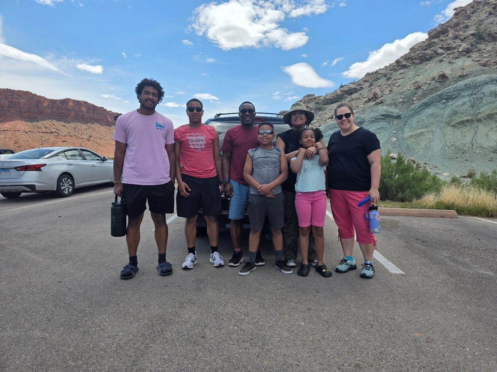

Our Story:
Kojo and Hillary married in 2003 with a shared dream, to build a loving family and support the underprivileged. Having grown up with parents devoted to service, they are now passing on those same values by teaching their children the importance of serving others.
Our Work
Areas of Impact
Health: Offering access to comprehensive medical care, including medical, dental, and vision services.
Education: Providing resources for academic, vocational, and technical growth to empower individuals.
Economic Opportunities: Fostering economic growth through education and skills development. This includes vocational training in trades such as carpentry, plumbing, tailoring, and mechanics; ICT training to prepare youth for global digital careers; industry-linked apprenticeship programs; and support for small-scale enterprises.
We are committed to promoting physical, emotional, mental, and spiritual well-being by providing essential resources and opportunities, including:
Education Support: Books, pencils, pens, shoes, backpacks, tablets, and computers.
Vocational Training: HVAC, automotive, carpentry, plumbing, masonry, electricals, and tailoring.
Technical Skills Development: Programming, web development, cybersecurity, and accounting.
Social Services: Psychological counseling and social work support.
Personal Growth: Goal setting, strategic planning, and mentoring.
Career Readiness: Training and preparation for professional advancement.
Athletic Development: Soccer and track (100m, 200m, 400m).
Scholarships: Opportunities for academically gifted students.
Places
Africa
Caribbean
North America